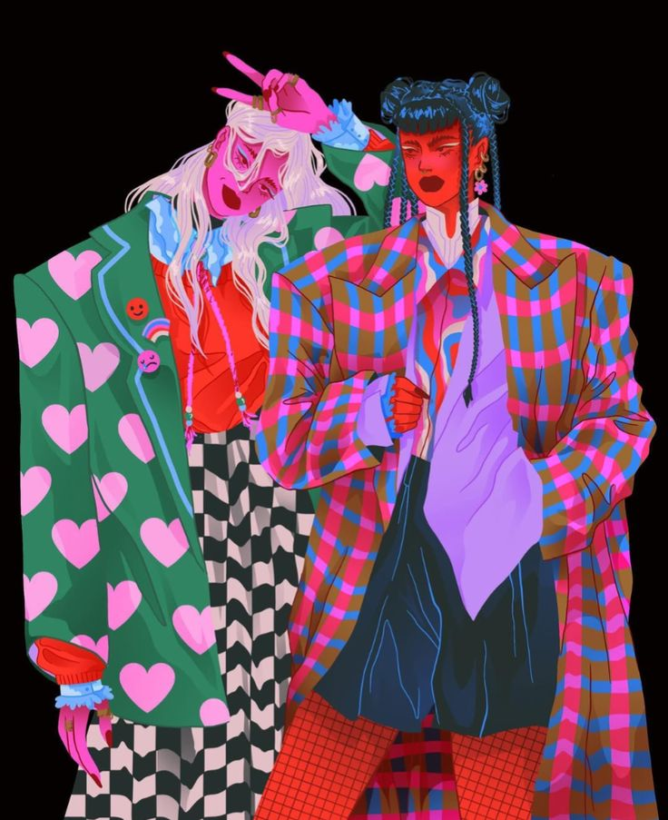

Dopamine dressing: Vestir para ser feliz.
En esta entrada veremos un poco del significado de esta palabra y cómo la ropa que llevas puesta afecta tu estado de ánimo, no solo nos concentraremos en los colores, también veremos un poco de el porqué escoges los estampados que usas.
29 de agosto 2025
Si tu personalidad y estado de ánimo fueran un outfit, ¿qué combinación de colores y formas te representaría mejor?
La moda no solo viste el cuerpo: también moldea el ánimo y comunica quiénes somos. Psicólogos, diseñadores y medios especializados como Marie Claire señalan que los colores, estampados y formas actúan como estímulos emocionales y pueden llegar a ser herramientas que comunican la identidad personal, porque son capaces de generar confianza y bienestar en quien lo viste, al tiempo que proyectan la identidad personal hacia los demás.
El concepto de dopamine dressing, mencionado por medios como Marie Claire (2023), sostiene que vestirse con ciertos colores y texturas puede elevar el estado de ánimo y mejorar el bienestar del sujeto. Sin embargo, la influencia de la moda va más allá: los estampados y las formas también cumplen un papel emocional y expresivo que va más allá de la simple funcionalidad de la vestimenta.
Diversos estudios han demostrado que los colores producen diferentes reacciones en las emociones; por ejemplo, tonalidades cálidas como el rojo o el amarillo suelen asociarse con energía y la vitalidad, mientras que los azules y verdes transmiten calma y serenidad. El vestirse con un color específico puede convertirse en un mecanismo que ayuda a la autorregulación emocional.
Los estampados, en cambio, funcionan como parte de una narrativa de la identidad. Los motivos florales evocan alegría, los diseños geométricos transmiten disciplina y racionalidad, mientras que los abstractos sugieren creatividad. Cada patrón convierte la prenda en un lienzo emocional donde se reflejan los sentimientos y las historias personales.
Las formas que se ven en el vestuario también comunican mensajes; por ejemplo, una camiseta con un estampado político puede despertar sentimientos de decepción o ira, mientras que una prenda con símbolos de gustos personales genera felicidad al compartir esto con los demás. Así, cada elección en el vestuario se vuelve un acto de comunicación emocional y social.
Implementar el dopamine dressing a estampados y formas permite entender cada prenda como un “objeto emocional que genera poder e identidad”. La moda, no solo viste, sino que fortalece el autoestima, incrementa el bienestar emocional y proyecta la autenticidad individual.
Al final, vestirse es mucho más que seguir tendencias: es un diálogo constante con el yo y con el mundo. ¿Tu vestuario expresa quién eres y qué sientes realmente?